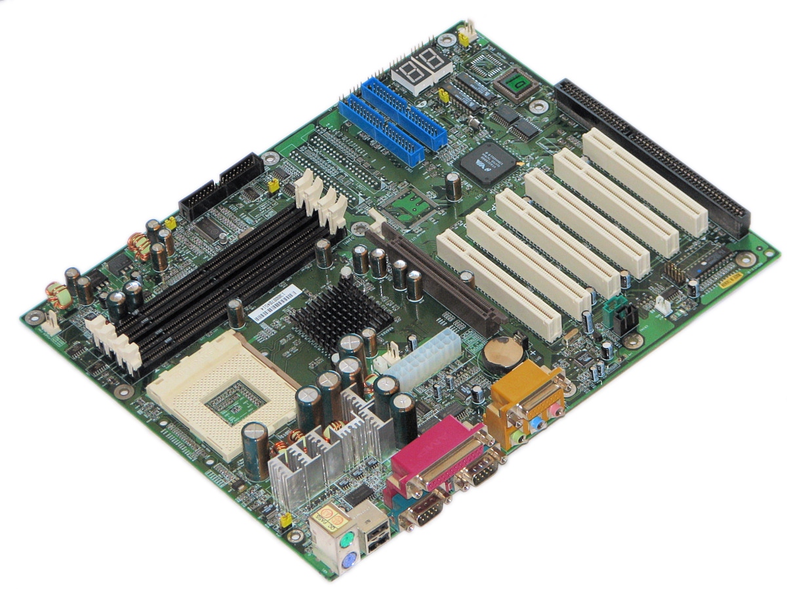

PC-Komponenten erklärt

Die Hauptplatine (englisch Mainboard, auch Motherboard) ist die zentrale Platine eines Computers. In diesem Artikel geht es zwar ausschließlich um Personal Computer, allerdings wird der Begriff Hauptplatine auch in vielen modernen Geräten der Unterhaltungselektronik, mobilen Geräten, wie z. B. Smartphones, Tablet-Computer oder sonstigen Beispielen für die Verwendung eines System-on-a-Chip gebraucht.